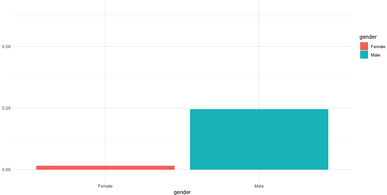

Fairness Analysis of Machine Learning Models using Explainable AI in R

This project investigates bias in machine learning models using the Adult Income dataset.
A Random Forest classifier is trained to predict income, and fairness is evaluated across
demographic groups such as gender and race.
Explainable AI (XAI) techniques, including SHAP values and partial dependence plots,
are used to understand model decisions and improve transparency.
ai-bias-detection-xai-r/ │ ├── data/ │ └── adult_income.csv │ ├── scripts/ │ └── bias_analysis.R │ ├── results/ │ ├── gender_bias.csv │ ├── race_bias.csv │ ├── feature_importance.csv │ ├── shap_row1.png │ ├── gender_bias_plot.png │ └── summary_report.txt │ ├── README.md └── .gitignore
Run the R script after installing dependencies:
install.packages(c("randomForest", "caret", "iml", "dplyr", "ggplot2"))
source("scripts/bias_analysis.R")
This project highlights how AI systems can produce biased outcomes. It emphasizes the importance of: